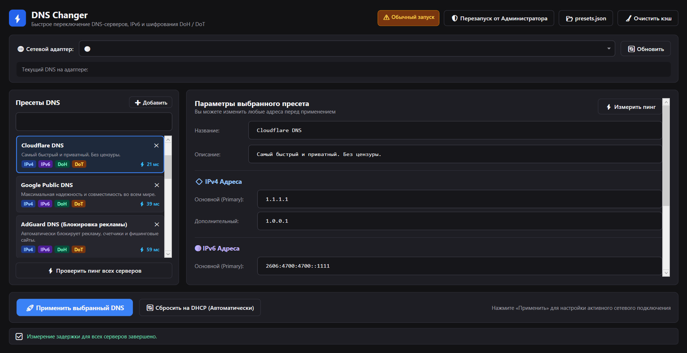

Забудьте про блуждание по запутанным меню Windows. Ускоряйте интернет, блокируйте навязчивую рекламу и защищайте свои данные с помощью шифрования DoH и DoT без лишних настроек.

Справится даже человек, который никогда не настраивал сеть
Загрузите файл DnsChanger.exe с официальной страницы релизов на GitHub. Установка не требуется — программа сразу готова к работе.
Дважды кликните по файлу. Если Windows покажет системное окно SmartScreen, нажмите «Подробнее» → «Выполнить в любом случае».
В левой колонке выберите нужный сервер (например, Cloudflare для скорости или AdGuard для блокировки рекламы), либо впишите свой адрес.
Нажмите большую синюю кнопку «🚀 Применить выбранный DNS». Программа сама перенастроит ваш Wi-Fi или кабель и очистит кэш сети!
Всё, что нужно для быстрого и безопасного интернета
В один клик подключайте самые быстрые публичные серверы: Cloudflare (1.1.1.1), Google (8.8.8.8), Quad9, OpenDNS, Яндекс и Control D.
Пресеты AdGuard DNS и Quad9 отсекают рекламные баннеры, вредоносные скрипты и фишинговые сайты еще до их загрузки в браузере.
Полная поддержка DNS-over-HTTPS и DNS-over-TLS в Windows 11. Провайдер больше не сможет отслеживать ваши запросы к сайтам.
Проверьте отклик до каждого сервера прямо в приложении, чтобы выбрать самый быстрый DNS для вашего провайдера.
Легко добавляйте любые свои адреса через кнопку «➕ Добавить» или файл presets.json. Программа сохранит их навсегда.
Если захотите вернуть стандартные настройки провайдера или роутера — просто нажмите «Сбросить на DHCP».
Ответы на популярные вопросы простыми словами